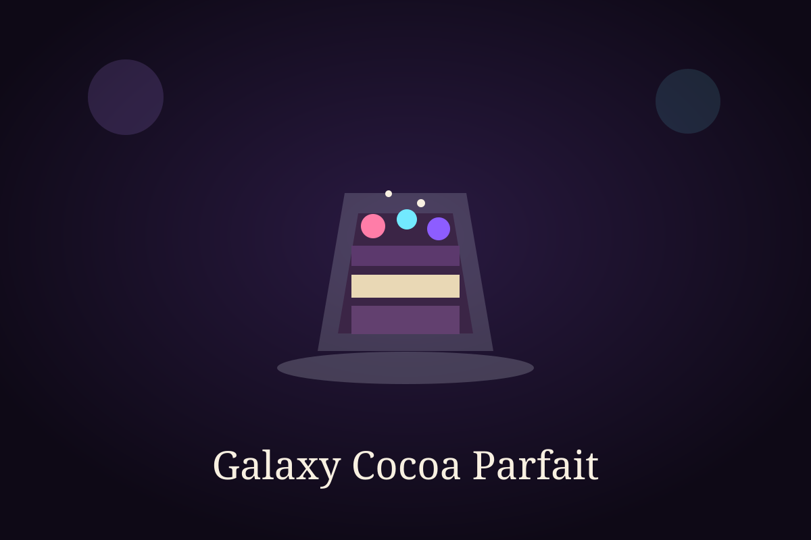

Time Module

Ingredient Vault
Ingredients
- 1 cup whipped cream
- 2 tablespoons cocoa powder
- 2 tablespoons sugar
- 1/2 cup biscuit crumbs
- 1/4 cup chopped berries or banana
- Chocolate shavings for topping
Cooking Sequence
Step-by-step instructions
- Mix the whipped cream, cocoa powder, and sugar until smooth.
- Place a layer of biscuit crumbs at the bottom of a dessert glass.
- Add a layer of cocoa cream over the crumbs.
- Scatter a little fruit on top for freshness.
- Repeat the layers until the glass is filled.
- Finish with chocolate shavings and chill before serving.